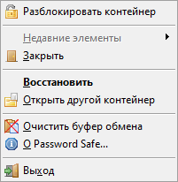
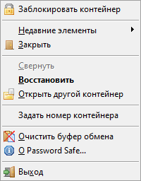

| Нет открытых контейнеров | Заблокированный контейнер | Разблокированный контейнер | ||
|  |  |
Через контекстное меню значка в области уведомлений можно получить доступ к списку последних использованных элементов (если контейнер разблокирован) и разблокировать контейнер, если он заблокирован. Его можно использовать для сворачивания основного окна Password Safe или его разворачивания, если окно уже свёрнуто, но контейнер не заблокирован.
При одновременном использовании нескольких контейнеров можно задать для них временные уникальные идентификаторы (числа от 0 до 99), которые будут отображены поверх значка в области уведомлений. Установка нулевого идентификатора убирает номер со значка.
Идентификатор бронируется после его назначения открытому контейнеру, но освобождается и становится доступным к назначению сразу после закрытия контейнера, которому он был назначен. Кроме того, назначенный идентификатор отображается перед именем контейнера во всплывающей подсказке значка.
Примечания: